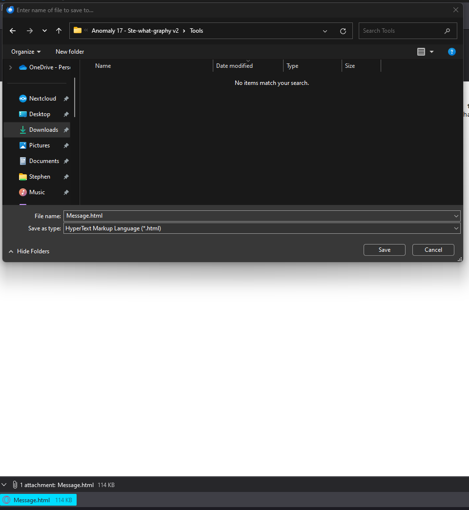 After opening the email in thunderbird and extracting the attachement into the tools folder We see some shorthand and a script that claims to be able to read it Taking a ss of the image and running it through the system will pop a window with potential matches. I had to change the threshold to .8 to not keep getting false positives 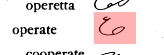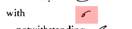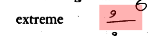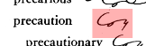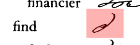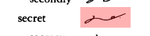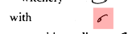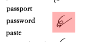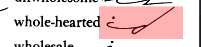
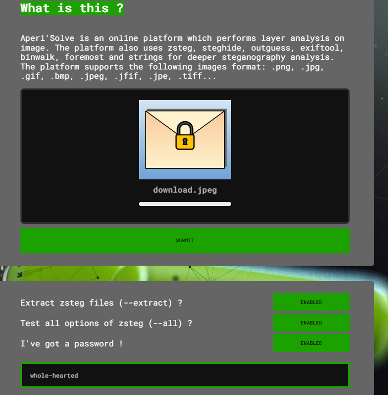 Putting the image into AperiSolve with passowrd 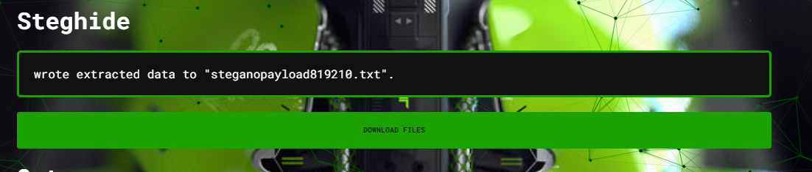 Steg hide finds the data and inside is the flag